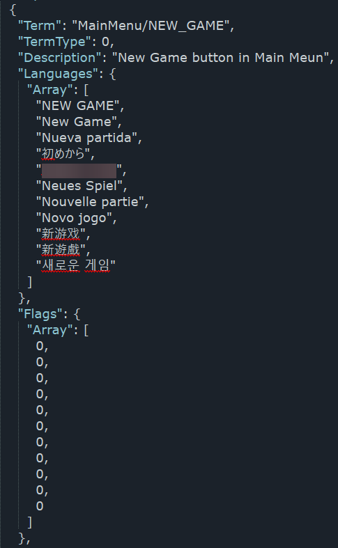

Unity Localization Tool
Авторська програма для зручного перекладу та роботи з MonoBehaviour асетами Unity. Написана на C# і працює на Windows 7-11. Підтверджена робота на Linux шляхом додавання програми як гри у бібліотеку Steam.

- Підтримка одинадцяти видів MonoBehaviour асетів.
- Незалежний вибір індексів мов.
- Імпорт перекладу з попередньо збереженого JSON.
- Експорт у CSV або TXT для подальшого перекладу на Google Sheets, Crowdin чи деінде.
- Імпорт з CSV або TXT з оновленням лише змінених рядків.
- Відновлення тексту зі стовпця оригіналу — окремо або для всіх рядків одразу.
- Пошук по тексту або лише по ID з панеллю результатів і списком попередніх пошуків.
- Функції Заміни, Скасування та Повтору для роботи з текстом.
- Індикація змінених рядків у таблиці та у заголовку вікна програми.
- Статуси для рядків «Потребує вичитки» і «Затверджено». Після збереження файл зі станами статусів зберігається поряд із JSON.
- Коректна робота з \rn, \r, \n і \t (Див. Про програму).
- Точна статистика кількості рядків, слів, перекладених рядків та слів у перекладі.
- Підтримка відкриття файлу JSON простим перетягуванням на .exe або у вікно програми.
- Українська та англійська локалізація.
- Підтримка темної і світлої теми.
- Гарячі клавіші для швидкої роботи:
Ctrl + O— відкрити файлуCtrl + S— зберегти файлуCtrl + H— замінити текстCtrl + Z— скасувати останню діюCtrl + Y— повторити скасовану діюCtrl + F— перехід до пошукуF3— знайти даліShift + F3— знайти попереднє
Завантажити
(версія 4.4.1 від 26.12.2025)
Подякувати за програму: monobank
Зворотній зв'язок через Телеграм: Галицький Розбишака